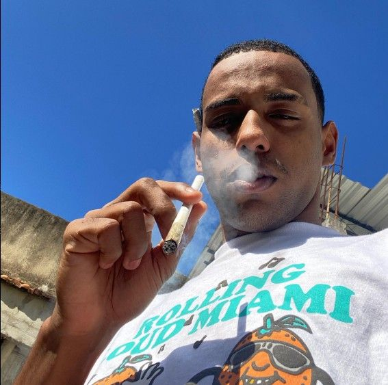
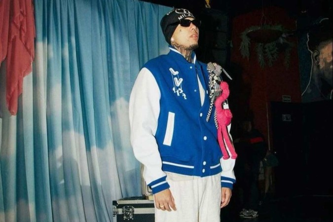

DERXAN o própio

- Alexander Castro, conhecido como Derxan, é um cantor e compositor nascido em Nova Iguaçu, na Baixada Fluminense. Ele é considerado um nome em ascensão no cenário do Drill e Grime, subgêneros do trap e hip-hop, que exploram diferentes batidas e, também, flertam com elementos do funk.
- Já participou de uma poesia acústica e tem varios albúns
- Uma muito famosa dele é a faixa - Eu mermo - com mais de 2 milhões de ouvintes
Kyan maloka
- kyan na verdade se chama renan e nasceu na baixada santista, mais especificamente na praia grande. é torcedor do santos, seu primeiro hit foi "mandrake" e seu atual projeto é o álbum "dias antes de mandrake". uma das maiores realizações foi a performance impecável no festival "cana 2k22", kyan é ref. acompanhem!
- Kyan tem um relacionamento lindo com outra cantora famosa chamada tasha, irmã da tracie, as duas tambem fazem musica
- O nome kyan estorou nas mídias depois do seu novo albúm entitulado, 'Um Quebrada Inteligente' com mais de 3 milhões de reproduções cada música
Ryu o corredor

- Ryan Gonçalves, 19 anos, é uma das jovens promessas do trap no Brasil. Conhecido pelo nome artístico de Ryu, The Runner, o trapper alcançou os holofotes no rap ainda este ano, quando lançou o primeiro álbum, chamado Essa é a Vida de um Corredor.
- O primeiro álbum de Ryu foi um divisor de águas, na visão do músico. Essa é a vida de um corredor tem mais de 70 milhões de streams, apenas no Spotify. A mixtape foi feita de casa, com alguns amigos e equipamentos que ele já tinha. “Acho que nenhuma música que lancei até agora eu fiz em um estúdio”, destaca Ryu. O processo, considerado underground pelo artista, lhe rendeu uma maior visibilidade no cenário.
- Ryu tem soltado muitas músicas novas, cada uma com seu charme especial, um ótimo cantor, e logo logo vem mais uma musica com o canto DUDU outro cantor gigante no cenário